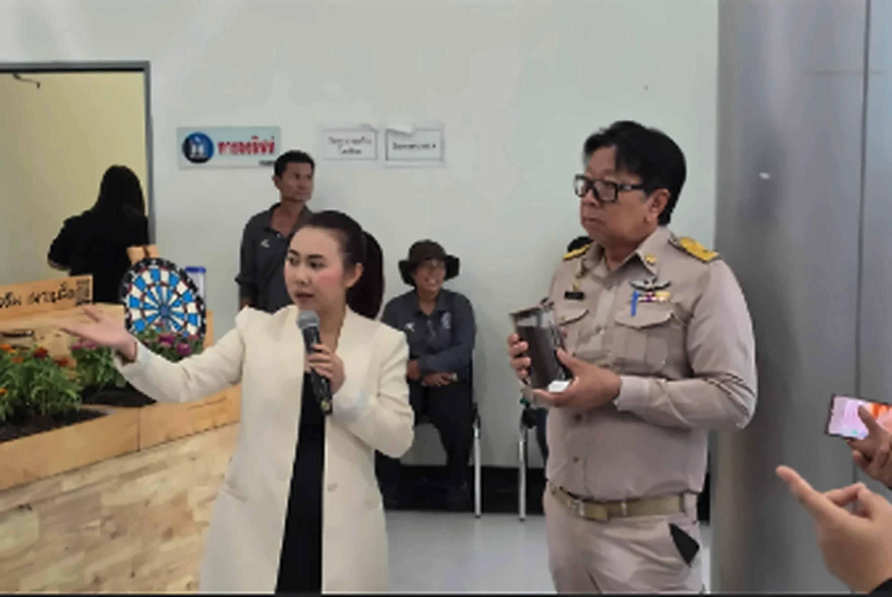
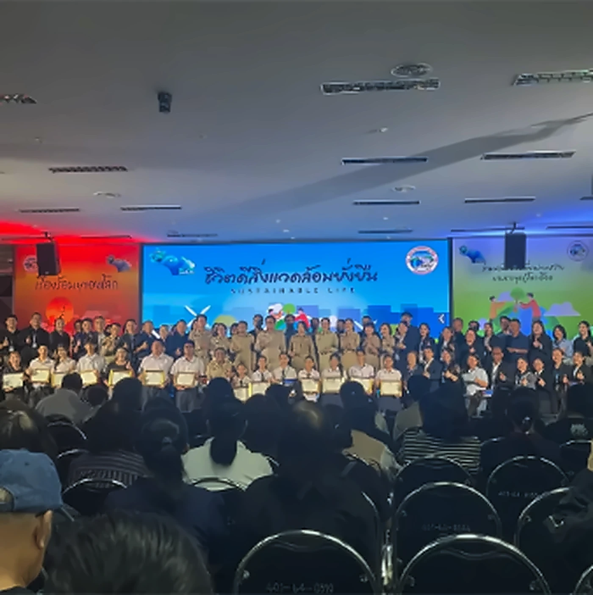
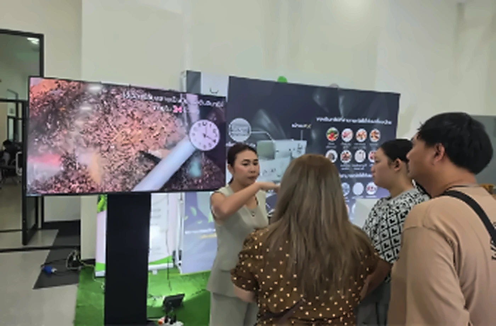
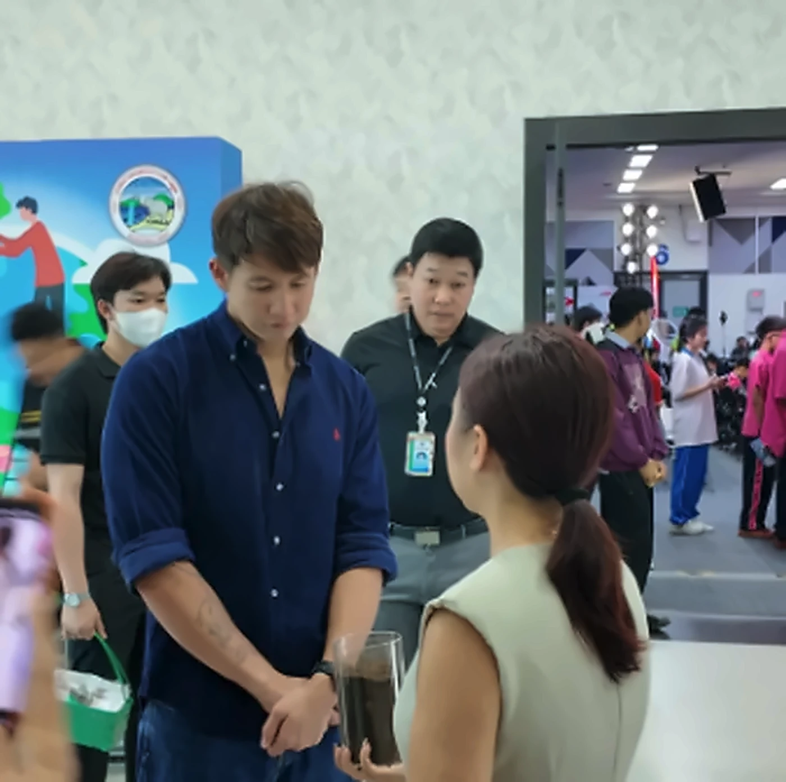

งานแสดงเกี่ยวกับกิจกรรมนี้
Sustainable Life 2026 ไม่ใช่เพียงงานแสดงนวัตกรรมเพื่อความยั่งยืน แต่เป็นพื้นที่ที่เปิดโอกาสให้ทุกคนได้ร่วมเรียนรู้ แลกเปลี่ยนแนวคิด และสร้างแรงบันดาลใจในการดูแลโลกของเรา CiViO รู้สึกเป็นเกียรติที่ได้ร่วมเป็นส่วนหนึ่งของงานในครั้งนี้
ที่บูธ CiViO นำเสนอเครื่องกำจัดขยะเศษอาหารที่ช่วยเปลี่ยนเศษอาหารให้กลายเป็นปุ๋ยภายใน 24 ชั่วโมง ลดปริมาณขยะตั้งแต่ต้นทาง ลดก๊าซมีเทนและก๊าซคาร์บอน และส่งเสริมการใช้ทรัพยากรอย่างคุ้มค่า เพื่อก้าวสู่สังคมที่ยั่งยืน
อีกหนึ่งไฮไลต์สำคัญของงานคือการบรรยายจากคุณทราย สก๊อต ที่แบ่งปันประสบการณ์และแนวคิดเกี่ยวกับการอนุรักษ์สิ่งแวดล้อม พร้อมสร้างแรงบันดาลใจให้ทุกคนตระหนักว่า “การเปลี่ยนแปลงที่ยิ่งใหญ่ เริ่มต้นได้จากการลงมือทำของแต่ละคน”
CiViO เชื่อว่าการดูแลโลกไม่ใช่หน้าที่ของใครคนเดียว แต่เป็นความร่วมมือของทุกภาคส่วน และหวังว่าจะได้เป็นส่วนหนึ่งในการผลักดันให้การจัดการขยะอาหารเป็นเรื่องง่าย และเกิดขึ้นได้ในทุกองค์กร ทุกธุรกิจ และทุกชุมชน ขอขอบคุณทุกท่านที่แวะมาเยี่ยมชมบูธ พูดคุย และแลกเปลี่ยนความคิดเห็น



ประเด็นสำคัญจากกิจกรรม
- นำเสนอเครื่องกำจัดขยะเศษอาหารที่เปลี่ยนเศษอาหารเป็นปุ๋ยภายใน 24 ชั่วโมง
- แลกเปลี่ยนแนวคิดการลดขยะ ก๊าซมีเทน และก๊าซคาร์บอนกับผู้เยี่ยมชมบูธ
- ฟังการบรรยายสร้างแรงบันดาลใจจากคุณทราย สก๊อต